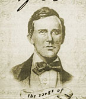
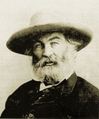
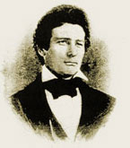
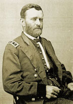
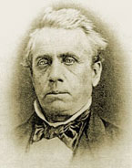
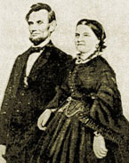
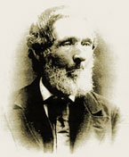
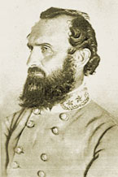
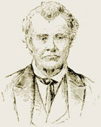

Highlights
10th Prairieland Chautauqua: “The Age of Lincoln”
Under the big tent in Jacksonville’s Community Park
Friday, August 29, to Monday, September 1
After the decline of America's traveling Chautauquas in the 1930s, the Morgan County Historical Society took the initiative in 1999 to revive the Chautauqua tradition with an annual four or five day event under a big tent in Jacksonville's Community Park. Under the direction of Dr. Wolf Fuhrig, the event has focused on a different theme every year: “Inside the Civil War” in 1999, “Jacksonville, Illinois, 1825 to 2000” in 2000, “American Humor” in 2001, “The Jazz Age” in 2002, “American Women” in 2003, “Westward Bound: The Lewis and Clark Expedition” in 2004, “Pioneering Educators in Central Illinois” in 2005, “Movers and Shakers in Illinois” in 2006, and “Voices for Freedom and Justice” in 2007.
With its emphasis on American history and music, the Prairieland Chautauqua is presently the only annual event of its kind in the Midwest, attracting, free of charge, an average audience of some 2,000 over four days. This year from August 29 to September 1, the Prairieland Chautauqua will celebrate its tenth year as well as the bicentennial of Abraham Lincoln's birth (February 12) with the theme “The Age of Lincoln.” On Labor Day, September 1, the Chautauqua will also kick off a string of events in Jacksonville commemorating the life and work of America's 16th President.
SCHEDULEFriday, August 29
4 p.m. “Church Hymns of Lincoln’s Time,”
performed by Stephanie and John Wilkey
5 p.m. “Lincoln Tales Tall and True” told by Brian “Fox” Ellis of Peoria
6 p.m. Supper
7 p.m. “Folk Songs of Lincoln’s Time,”
performed by Clark “Bucky” Halker of Chicago
8 p.m. “Peter Cartwright” portrayed by the Rev. Joel Catlin of O’Fallon
Saturday, August 30
4 p.m. “The Story of Colonel John J. Hardin, Lincoln’s Friend and Rival,”
told by Ron Tendick of Jacksonville
5 p.m. “Walt Whitman’s Lincoln,“ presented by Brian “Fox” Ellis of Peoria
6 p.m. Supper
7 p.m. The Pondell Trio of Decatur
8 p.m. “General Thomas “Stonewall” Jackson,”
portrayed by John McCord of Jacksonville
Sunday, August 31
4 p.m. “Negro Spirituals,“ sung by Joel Tinsley of Jacksonville
5 p.m. “The Story of Gustave Koerner, Lincoln’s Friend and Supporter,”
told by Wolf Fuhrig of Jacksonville
6 p.m. Supper
7 p.m. “Stephen Foster and his Music,” presented by Chris Vallilo of Macomb
8 p.m. “Ulysses S. Grant,“ portrayed by George Dauler of Wickliffe, Ohio
Monday, September 1
2:30 p.m. The 33rd Illinois Volunteer Regiment Band
4 p.m. “Lincoln and Illinois College,” as told by Loreli Steuer
5 p.m. “William Herndon about Lincoln, the Lawyer,”
presented by Brian “Fox”
Ellis of Peoria
6 p.m. Supper
7 p.m. “American Melodies”: Sing-along with Ken Bradbury
8 p.m. The Lincolns,
portrayed by R.F. and Dorothy McClerren of Charleston, Illinois
Planning & direction: Dr. Wolf Fuhrig, 217-243-2423 or wdfuhrig@aol.com

Stephen Foster

Walt Whitman

John Hardin

Ulysses S. Grant

Gustav Koerner

The Lincolns

Wiliam Herndon

Stonewall Jackson

Peter Cartwright